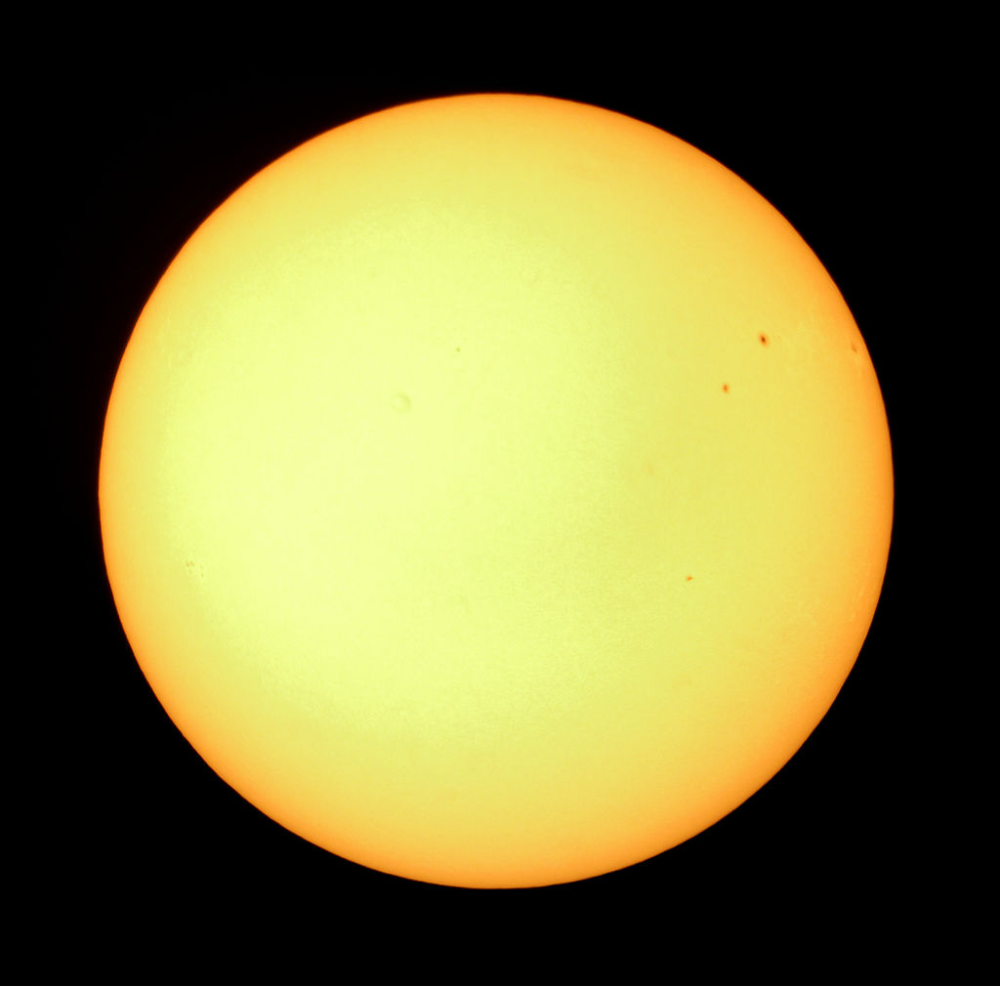
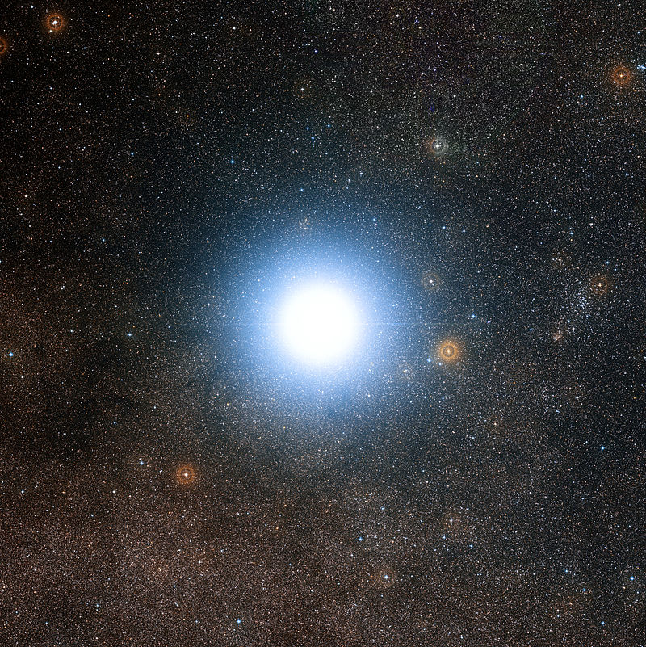
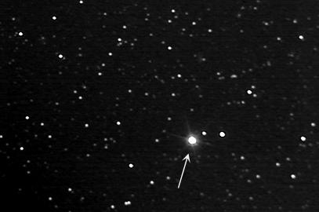
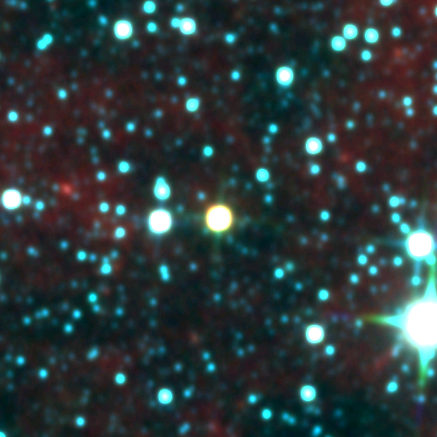
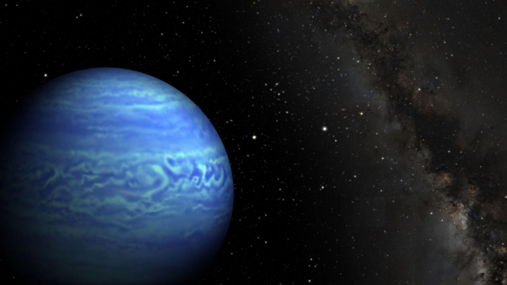

Galeria Gwiazd
Gwiazda - kuliste ciało niebieskie stanowiące skupisko powiązanej grawitacyjnie materii w stanie plazmy bądź zdegenerowanej.

Słońce

Alfa Centauria

Gwiazda Barnarda

WISE 1049-5319

WISE 0855-0714
Powrót Do Galerii
Made by Marcel Dajnowicz